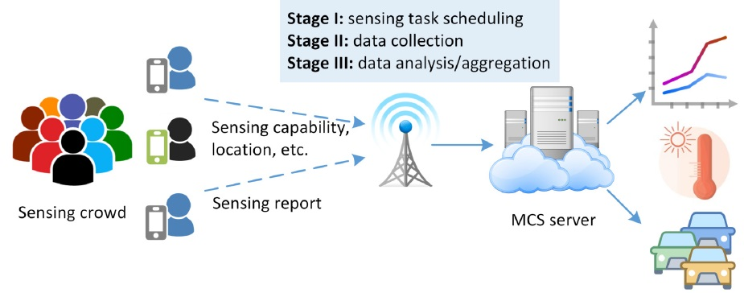

| |
| |
Towards Privacy-Preserving Mobile Crowd Sensing: A Multi-Stage Solution
Sponsored by the U.S. National Science Foundation (Awards # ECCS-1711991)
Duration: 07/01/2017-06/30/2020
|
|


|
|
|
Welcome to the website of our research project: "Towards Privacy-Preserving Mobile Crowd Sensing: A Multi-Stage Solution". This project is a collaborative effort between two institutions: University of Nevada, Reno, and Binghamton University, State University of New York. This website is created and maintained to disseminate and share research results and other information related to the project.
Project Description
Mobile devices, including smartphones and tablets, are becoming extremely prevalent nowadays. Equipped with diverse sensors, from GPS to camera, and paired with the inherent mobility of their owners, mobile devices are capable of acquiring rich information of surrounding environment. However, the wide adoption of mobile crowd sensing is largely hindered by its privacy concerns. To facilitate the functionality of each stage of mobile crowd sensing, including sensing task allocation, sensing data collection, and result aggregation, sensing devices report their location information, sensing capabilities, task preferences, and sensing results to servers that will potentially disclose their daily routings, behavior patterns and even identities. With these concerns, the overall goal of this project is to address privacy leakage issues from different stages of mobile crowd sensing. Privacy-enhanced mobile crowd sensing will attract more participants and thus accelerate the maturity of smart health care, environment monitoring, traffic surveillance, social event observation, etc. In addition, this project will also serve as a training ground for educating future decision-makers and workforce on theory and tools.
The PIs plan to develop effective and efficient privacy preservation schemes for different stages of mobile crowd sensing. It corresponds to three closely intertwined research thrusts. Thrust I explores protecting user's sensitive information, such as locations, sensing capabilities and task preferences, from the server, while still allowing it to optimally or approximately solve task allocation problems. Rather than highly computationally-intensive crypto-based techniques, privacy preservation schemes will be designed based on decomposition methods and distributed computing algorithms. Thrust II aims to provide user's location privacy in the stage of data collection. Since locations of users, who perform sensing over the same event within a certain geographic area, are highly correlated, it deteriorates user's privacy achieved individually. To address this issue, privacy preservation schemes will be developed by exploring collaborations among users. Game theories will be adopted to further analyze users' strategies and interactions. The objective of Thrust III is to protect users' sensing data privacy during the stage of data analysis. The research is featured by jointly considering the data imperfection that is caused by the limited sensing capabilities at mobile devices and even the misbehavior of lazy/malicious users. To achieve data privacy and service accuracy simultaneously, novel schemes will be developed combining efficient matrix completion methods and advanced crypto techniques.

Personnel
Principal Investigators
 |
Dr. Ming Li (Leading PI)
Associate Professor
Department of Computer Science and Engineering
The University of Texas at Arlington
Email: ming.li@uta.edu
Homepage: http://ranger.uta.edu/~mingli |
 |
Dr. Linke Guo
Assistant Professor
Department of Electrical and Computer Engineering
Binghamton University, State University of New York
Email: lguo@binghamton.edu
Homepage: http://www.ws.binghamton.edu/guo/ |
Current Graduate Students
 |
Mingyan Xiao
Ph.D. student
Department of Computer Science and Engineering
The University of Texas at Arlington
Email:mingyan.xiao@mavs.uta.edu
Homepage: |
|
Wenqiang Jin
Ph.D. student
Department of Computer Science and Engineering
The University of Texas at Arlington
Email: wenqiang.jin@mavs.uta.edu
Homepage: |
|
Pei Huang
Ph.D. student
Department of Electrical and Computer Engineering
Binghamton University, State University of New York
Email:phuang13@binghamton.edu
Homepage: |
Publications
-
Privacy-Preserving Data Aggregation for Mobile Crowdsensing With Externality: An Auction Approach ,
Mengyuan Zhang, Lei Yang, Shibo He, Ming Li, Junshan Zhang,
IEEE Transactions on Networking (ToN), 2021.
Summary: We develop an auction framework for privacy-preserving data aggregation in mobile crowdsensing, where the platform plays the role as an auctioneer to recruit workers for sensing tasks. The workers are allowed to report noisy versions of their data for privacy protection; and the platform selects workers by taking into account their sensing capabilities to ensure the accuracy level of the aggregated result. Observe that when moving the control of data privacy from the data aggregator to the workers, the data aggregator has limited market power in the sense that it can only partially control the noise by judiciously choosing a subset of workers based on workers’ privacy preferences. This introduces externalities because the privacy of each worker depends on the total noise in the aggregated result that in turn relies on which workers are selected. Specifically, we first consider a privacy-passive scenario where workers participate if their privacy loss can be adequately compensated by the rewards. We explicitly characterize the externalities and the hidden monotonicity property of the problem, making it possible to design a truthful, individually rational and computationally efficient incentive mechanism. We then extend the results to a privacy-proactive scenario where workers have individual requirements for their perceivable data privacy levels. Our proposed mechanisms for both scenarios can select a subset of workers to (nearly) minimize the cost of purchasing their private sensing data subject to the accuracy requirement of the aggregated result. We validate the proposed scheme through theoretical analysis as well as extensive simulations.
-
Collusion-Resistant Worker Recruitment in Crowdsourcing Systems ,
Mingyan Xiao, Wenqiang Jin, Ming Li, Lei Yang, Arun Thapa, and Pan Li,
IEEE Transactions on Mobile Computing (TMC), 2021.
Summary: In the wake of the Web 2.0, crowdsourcing has emerged as a promising approach to maintain a flexible workforce for human intelligence tasks. To stimulate worker participation, many reverse auction-based incentive mechanisms have been proposed. Designing auctions that discourage workers from cheating and instead encouraging them to reveal their true cost information has drawn significant attention. However, the existing efforts have been focusing on tackling individual cheating misbehaviors, while the scenarios that workers strategically form collusion coalitions and rig their bids together to manipulate auction outcomes have received little attention. To fill this gap, in this work we develop a $(t,p)$-collusion resistant scheme that ensures no coalition of weighted cardinality $t$ can improve its group utility by coordinating the bids at a probability of $p$. This paper takes into account the unique features of crowdsourcing, such as diverse worker types and reputations, in the design. The proposed scheme can suppress a broad spectrum of collusion strategies. Besides, desirable properties, including $p$-truthfulness and $p$-individual rationality, are also achieved. To provide a comprehensive evaluation, we first analytically prove our scheme’s collusion resistance and then experimentally verify our analytical conclusion using a real-world dataset. Our experimental results show that the baseline scheme, where none of the critical properties is guaranteed, costs up to 20.1 times the optimal payment in an ideal case where no collusion exists, while our final scheme is merely 4.9 times the optimal payment.
-
ULPT: A User-Centric Location Privacy Trading Framework for Mobile Crowd Sensing ,
Wenqiang Jin, Mingyan Xiao, Linke Guo, Lei Yang, and Ming Li,
IEEE Transactions on Mobile Computing (TMC), 2021.
Summary: Mobile crowd sensing (MCS) arises as a promising data collection paradigm that leverages the power of ubiquitous mobile devices to acquire rich information regarding their surrounding environment. In many location-based sensing tasks, workers are required to associate their sensing reports with corresponding geographic coordinates. Such information leaves a trail of worker's historical location record which thus poses a severe threat to their location privacy. On the other hand, individual workers may perceive location privacy differently. Instead of following conventional solutions that aim to perfectly hide user privacy, this paper adopts a novel alternative approach. A user-centric location privacy trading framework, called ULPT, is constructed to facilitate location privacy trading between workers and the platform. Each worker can decide how much location privacy to disclose to the platform in an MCS task based on its own location privacy leakage budget $\xi$. The higher $\xi$ is, the more privacy its reported location discloses. Accordingly, it receives higher payment from the platform as compensation. Besides, ULPT enables the platform to select a suitable set of winning workers to achieve desirable MCS service accuracy while taking into account of its budget limit and worker privacy requirements. For this purpose, a heuristic algorithm is devised with a bounded optimality gap. As formally proved in this manuscript, ULPT guarantees a series of nice properties, including $\xi$-privacy, $(\alpha, \beta)$-accuracy, budget feasibility. Moreover, both rigorous theoretical analysis and extensive simulations are conducted to evaluate tradeoffs among these three.
-
Incentivizing Crowdsensing-based Noise Monitoring with Differentially-Private Locations ,
Pei Huang, Xiaonan Zhang, Linke Guo, and Ming Li,
IEEE Transactions on Mobile Computing (TMC), 2021.
Summary: Mobile crowdsensing is a technique where a crowdsensing server outsources sensing tasks to the crowd for mobile data collection. In mobile crowdsensing, some tasks require location information to achieve their objectives, which incurs severe concerns on location privacy leakage and threatens workers' properties as well as public safety. In some cases, even sensing data itself can be used as auxiliary information resulting in location privacy breaches. Many existing works apply differential privacy mechanisms or location privacy preservation to tackle this problem, but they cannot efficiently fulfill privacy goals because each worker only considers his own privacy. As a consequence, the accumulated privacy budget will lower down the composed privacy level of all the workers' locations. In addition, deploying differential privacy is costly for workers and it will degrade the quality of data required in crowdsensing tasks. How to balance the cost and provide accurate aggregated data while fulfilling privacy objectives becomes a challenging issue. In this paper, we propose a group-differentially-private game-theoretical solution, which addresses these limitations in a privacy-preserving and efficient way. Our scheme enables the indistinguishability of workers' locations and sensing data without the help of a trusted entity while meeting the accuracy demands of crowdsensing tasks.
-
Data-Driven Spectrum Trading with Secondary Users' Differential Privacy Preservation ,
Jingyi Wang, Qixun Zhang, Ming Li, Yuanxiong Guo, Zhiyong Feng, and Miao Pan,
IEEE Transactions on Dependable and Secure Computing (TDSC), 2019.
Summary: Mobile crowd sensing (MCS) is a technique where sensing tasks are outsourced to a crowd of mobile users. Since most of sensing tasks are location-dependent, workers are required to embed their locations into sensing reports, which incurs location privacy vulnerabilities. Realizing that workers perceive their location privacy differently, in this work we construct an auction-based trading market, facilitating location privacy trading between workers and the platform. Each worker can decide how much location privacy to disclose to the platform based on its own location privacy leakage budget $\xi$. The higher $\xi$ is, the less secrecy its reported location preserves. As a result, it receives higher payment from the platform as a compensation to its privacy loss. Besides, our mechanism enables the platform to select a suitable set of winning workers to achieve desirable service accuracy. For this purpose, a heuristic algorithm is devised, with polynomial-time complexity and bounded optimality gap. As formally proved in this manuscript, our proposed mechanism guarantees a series of nice properties, including $\xi$-privacy, $(\alpha, \beta)$-accuracy, and budget feasibility.
-
If You Do Not Care About It, Sell It: Trading Location Privacy in Mobile Crowd Sensing ,
Wenqiang Jin, Mingyan Xiao, Ming Li, and Linke Guo,
Proceedings of IEEE International Conference on Computer Communications (INFOCOM'19).
Summary: Mobile crowd sensing (MCS) is a technique where sensing tasks are outsourced to a crowd of mobile users. Since most of sensing tasks are location-dependent, workers are required to embed their locations into sensing reports, which incurs location privacy vulnerabilities. Realizing that workers perceive their location privacy differently, in this work we construct an auction-based trading market, facilitating location privacy trading between workers and the platform. Each worker can decide how much location privacy to disclose to the platform based on its own location privacy leakage budget $\xi$. The higher $\xi$ is, the less secrecy its reported location preserves. As a result, it receives higher payment from the platform as a compensation to its privacy loss. Besides, our mechanism enables the platform to select a suitable set of winning workers to achieve desirable service accuracy. For this purpose, a heuristic algorithm is devised, with polynomial-time complexity and bounded optimality gap. As formally proved in this manuscript, our proposed mechanism guarantees a series of nice properties, including $\xi$-privacy, $(\alpha, \beta)$-accuracy, and budget feasibility.
-
Securing Task Allocation in Mobile Crowd Sensing: An Incentive Design Approach,
Mingyan Xiao, Ming Li, Linke Guo, Miao Pan, Zhu Han and Pan Li,
Proceedings of IEEE Conference on Communications and Network Security (CNS'19).
Summary: As a critical component of mobile crowd sensing (MCS), task allocation has been extensively investigated. In general, it addresses how to wisely distribute sensing tasks among sensing workers. Yet, the security threat involved therein has hardly been studied. In an ideal scenario, workers are trusted to report their accurate parameters to the platform, so that task allocation optimization problems can be correctly formulated and calculated. Nonetheless, malicious workers can explore illegal benefit gain by simply uploading falsified parameters. Even worse, such an attack is difficult to detect. In this paper, we start from a simplified case in which workers report erroneous objective functions to gain extra utility. To defend this attack, we novelly leverage incentive mechanism design. Workers are motivated to report desirable ''indicators'', based on which the platform can still obtain the accurate task allocation profile even without workers' genuine parameters. The effectiveness and efficiency of our mechanism is validated through both formal analysis and extensive simulation results.
-
DPDA: A Differentially Private Double Auction Scheme for Mobile Crowd Sensing,
Wenqiang Jin, Ming Li, Linke Guo, and Lei Yang,
IEEE Conference on Communications and Network Security (CNS'18).
Summary: Mobile crowd sensing (MCS) takes advantage of pervasive mobile devices that are equipped with multi-sensors to collect rich data of a certain geographic area. Because of the importance of incentivizing users to participate, auction-based open MCS markets have been proposed in past literature. Note that their focus is to achieve critical economic properties but fail to protect bid privacy. Although there are limited schemes dealing with this issue, they are designed only for single-side auctions and are unsuitable for double-side auctions whose properties are quite different. In this paper, inspired by uniform pricing and exponential mechanism, we propose a differentially private double auction (DPDA) scheme for MCS to protect bid privacy for both auction sides. In addition, the traditional economic properties, such as γ-truthfulness, individual rationality and budget balance, are guaranteed as well. Besides, we derive closed forms over the computation complexity and the approximate optimal platform revenue achieved by the scheme. Extensive simulations have been conducted on real-world datasets to validate the efficiency and effectiveness of DPDA.
-
Crowd-empowered privacy-preserving data aggregation for mobile crowdsensing
Lei Yang, Mengyuan Zhang, Shibo He, Ming Li, and Junshan Zhang,
ACM International Symposium on Mobile Ad Hoc Networking and Computing (MobiHoc'18).
Summary: We develop an auction framework for privacy-preserving data aggregation in mobile crowdsensing, where the platform plays the role as an auctioneer to recruit workers for a sensing task. In this framework, the workers are allowed to report privacy-preserving versions of their data to protect their data privacy; and the platform selects workers based on their sensing capabilities, which addresses the drawbacks of game-theoretic models that cannot ensure the accuracy level of the aggregated result, due to the existence of multiple Nash Equilibria. Observe that in this auction based framework, there exists externalities among workers’ data privacy, because the data privacy of each worker depends on both her injected noise and the total noise in the aggregated result that is intimately related to which workers are selected to fulfill the task. To achieve adesirable accuracy level of the data aggregation in a cost-effective manner, we explicitly characterize the externalities, i.e., the impact of the noise added by each worker on both the data privacy and the accuracy of the aggregated result. Further, by exploring the problem structure, we discover the hidden monotonicity property of the problem and determine the critical bid of workers, which makes it possible to design a truthful, individually rational and computationally efficient incentive mechanism. The proposed incentive mechanism can find a set of workers to approximately minimize the cost of purchasing private sensing data from workers subject to the accuracy requirement of the aggregated result. We validate the proposed scheme through theoretical analysis as well as extensive simulations.
-
Motivating Human-Enabled Mobile Participation for Data Offloading,
Xiaonan Zhang, Linke Guo, Ming Li, and Yuguang Fang,
IEEE Transactions on Mobile Computing (TMC), Vol. 17, No. 7, pp. 1624-1637, July 2018.
Summary: The exploding popularity of mobile devices enables people to enjoy benefits brought by various interesting mobile apps. However, the ever-increasing data traffic has exacerbated the congestion on current cellular networks, which results in users’ dissatisfaction, especially in crowded areas. Hence, how to alleviate data traffic in cellular networks becomes a challenging problem. Traditional methods rely on mobile offloading techniques to deviate the data traffic originally targeted to cellular networks, such as the small cell, Wi-Fi, and opportunistic communication. Unfortunately, mobile users still experience severe congestion when a large number of users request for data. Facing these challenges, we introduce the concept of mobile participation to assist data offloading by leveraging the mobility of users and the social features among a group of users. A mobile caching user, who pre-caches a certain amount of contents, will roam around congested areas to participate in content dissemination in order to satisfy users’ requests, which is expected to benefit both himself and users in the crowd simultaneously. To motivate such human-enabled mobile participation for data offloading, a Stackelberg game is deployed with joint considerations on social effect and delay effect. Based on detailed performance analysis, we demonstrate the feasibility and efficiency of the proposed approach.
-
Energy-efficient Autonomic Offloading in Mobile Edge Computing,Changqing Luo, Sergio Salinas, Ming Li, and Pan Li,
IEEE Digital Avionics Systems Conference (DASC'17).
Summary: The booming growth and popularity of mobile devices have led to the surge of various mobile applications. Many mobile applications, such as online video, gaming, are essentially computation-intensive, and hence can quickly deplete mobile devices’ battery energy. To address this issue, academia and industry have proposed mobile edge computing (MEC) that can enable mobile devices to automatically offload computations to the edge servers located within the radio access networks of cellular operators. However, energy-hungry wireless communications incur extra energy consumption that may offset the energy saving due to computation offloading. To this end, we design an energy-efficient autonomic offloading scheme by jointly considering the physical layer design and application running latency. Specifically, we first mathematically model the energy consumption of a mobile application in MEC environment by taking into account the energy consumption incurred by the interactions among the tasks for the same application, which is largely ignored by previous studies. Then, we identify task execution flows based on a task interaction matrix, and formulate the maximum of the taskflow’s latencies as the application’s latency. Finally, we formulate an energy efficient offloading problem, which is generally NP-hard, and develop an efficient heuristic method to solve the problem. We present extensive simulation results to show that our proposed scheme can achieve significant reduction (up to 20% around) in energy consumption compared with previous schemes.
Disclaimer: The papers here are made available for timely dissemination of scholarly and technical work. Copyright and all rights therein are retained by authors or by other copyright holders.
Curriculum Development and Outreach
At University of Nevada,Reno:
- CS 491/691: Special Topics: Security and Privacy in Mobile Computing,
- CS 450/650: Computer Security,
- CS 493/693: Fundamentals of Cryptography.
At The University of Texas at Arlington:
- CS 2315: Discrete Structure,
- CS 5349/6349: Special Topic on Internet of Things.
Note: Any opinions, findings and conclusions or recommendations expressed on this website are those of the author(s) and do not necessarily reflect the views of the National Science Foundation (NSF).
|
| |
|
|
|